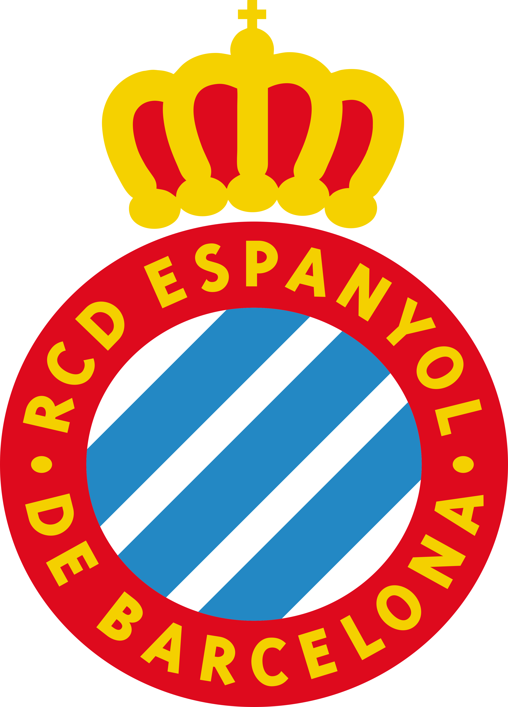

Primera División Española
LaLiga
Máximos goleadores
| Jugador | Equipo | Goles |
|---|
Máximos asistentes
| Jugador | Equipo | Asistencias | |
|---|---|---|---|
| 1 | Ousmane Dembélé |
|
13 |
| 2 | Karim Benzema |
|
12 |
| 3 | Vinicius Júnior |
|
10 |
| 4 | Jordi Alba |
|
10 |
| 5 | Iker Muniain |
|
10 |
| 6 | Daniel Parejo |
|
10 |
| 7 | Óscar Trejo |
|
9 |
| 8 | Sergi Darder |

Espanyol
|
9 |
| 9 | Nabil Fekir |
|
8 |
| 10 | Luka Modric |
|
8 |
Mejores porteros
| Jugador | Equipo | Goles encajados/Partidos jugados | |
|---|---|---|---|
| 1 | Yassine Bounou |
|
0,77 |
| 2 | Thibaut Courtois |
|
0,81 |
| 3 | Gerónimo Rulli |
|
0,88 |
| 4 | Unai Simón |
|
0,91 |
| 5 | Álex Remiro | Real Sociedad | 0,91 |
| 6 | Marc-André Ter Stegen |
|
0,97 |
| 7 | David Soria | Getafe CF | 1,08 |
| 8 | Jan Oblak |
|
1,13 |
| 9 | Matias Dituro | Celta de Vigo | 1,13 |
| 10 | Stole Dimitrievski |
|
1,19 |